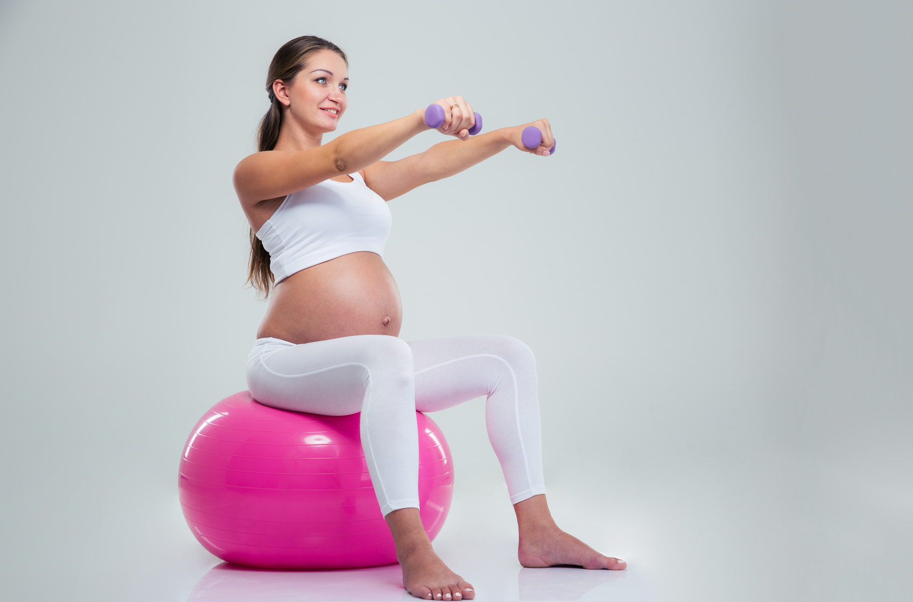

Peso muerto con mancuernas para glúteos y femoral paso a paso
Ya que el movimiento parte de esta flexión de cadera y debe mantenerse una alineación desde el talón de la pierna que se eleva por detrás hasta tu coronilla. Para ello, tienes que pensar en la musculatura estabilizadora de tu columna, es decir, tu zona dorsal debe estar conectada en todo momento.
-
Pie de apoyo fuerte y estable: toda la fuerza se ejercerá con el glúteo medio y femoral de la pierna de apoyo.
-
La pierna de apoyo no debe estar bloqueada.
-
La otra pierna extendida ligeramente atrás, con el pie ligeramente flexionado, activo: la punta del pie siempre mira hacia el suelo.
-
La zona dorsal activa: sujetando las mancuernas en cada mano y evitando redondear los hombros hacia delante. ( las escápulas siempre quieren tocarse).
-
Desde esa posición de inicio, llevamos la cadera hacia atrás: el cuerpo y pierna se mueven con un movimiento pendular manteniendo una línea recta.
Práctica de ejercicio durante el embarazo
Durante la gestación, la mujer presenta variados cambios físicos y fisiológicos. El ejercicio durante el embarazo es fundamental para lograr una óptima salud y estado del cuerpo.
Actualmente, el ejercicio es recomendado en las mujeres gestantes, siempre y cuando sus embarazos no sean de riesgo y su médico de cabecera lo autorice. La práctica de Pilates se convierte en una excelente alternativa en esta etapa. Al ser un método de entrenamiento de bajo impacto no sólo logra fortalecimiento muscular, sino también control y relajación sin exponer a la mujer a riesgos durante el ejercicio.
¿Cuáles son los objetivos del ejercicio durante el embarazo? El ejercicio durante el embarazo es excelente por muchos aspectos: mantiene y mejora el estado físico, favorece el ánimo y la idea es que la gestante lo vea más allá de un “entrenamiento”, es decir, como una forma de mejorar su estilo de vida y la de su bebé.
¿En qué se basa la práctica de Pilates en una mujer embarazada? Primero que todo es muy importante una evaluación previa para conocer el estado físico con el que llega la gestante y sus objetivos, eso determinará qué tipos de ejercicios se realizarán para comenzar. En general, estos buscan prevenir o aliviar síntomas clásicos como el dolor de espalda (debido a los cambios en la postura), controlar el peso y lograr acondicionamiento físico con énfasis en los músculos requeridos para el control del suelo pélvico que no solo se encarga de sostener el peso del bebé sino que participan en el trabajo de parto. Seguir leyendo...